调试前的必知必会¶
《Debug Hacks--深入调试的技术和工具》 - 吉冈弘隆，第二章的读书笔记，本文中的所有代码可在GitHub仓库中找到
寄存器和汇编代码¶
本章节介绍了x84_64平台中的各寄存器的作用，以及汇编代码的基本形式
x86_64寄存器¶
x86_64定义了各种寄存器，它们的用途如下表所示：
| Register | Purpose | Saved across calls |
|---|---|---|
| %rax | temp register; (保存函数返回值) | No |
| %rbx | callee-saved | Yes |
| %rcx | used to pass 4th argument to functions | No |
| %rdx | used to pass 3rd argument to functions | No |
| %rsp | stack pointer （指向栈顶） | Yes |
| %rbp | callee-saved; base pointer（指向栈帧开始的地方） | Yes |
| %rsi | used to pass 2nd argument to functions | No |
| %rdi | used to pass 1st argument to functions | No |
| %r8 | used to pass 5th argument to functions | No |
| %r9 | used to pass 6th argument to functions | No |
| %r10-r11 | temporary | No |
| %r12-r15 | callee-saved registers | Yes |
| %rip | instruction pointer; Program Counter register | Global |
另外还有xmm0, xmm1...等寄存器，用于传递float类型或者double类型的参数，具体参见本文中的“参数传递-x86_64”章节。
常见操作符¶
下表列出了对寄存器和内存的常见操作，其他操作和相应的汇编代码可参考文档。
| 操作类型 | 格式 | 操作数值 |
|---|---|---|
| 立即数 | $Imm |
Imm，立即数寻址 |
| 寄存器 | Ea |
R[Ea]，寄存器寻址 |
| 内存 | Imm |
M[Imm]，绝对寻址 |
| 内存 | (Ea) |
M[R[Ea]]，间接寻址 |
| 内存 | Imm(Ea) |
M[Imm + R[Ea]]，（基地址+偏移量）寻址 |
Imm表示立即数，例如：0x8048d8eEx表示寄存器，例如：%raxR[Ex]表示寄存器Ex的值M[x]表示地址为x的内存中的值
函数调用和栈¶
本章节结合GDB的调试信息，介绍了栈在程序运行中的作用
栈的布局¶
在函数调用的过程中，栈上依次保存了：
- 传给函数的参数，具体传递过程可参考本文中的“参数传递”章节
- 对于x86_64，参数通过“rdi, rsi, rdx, rcx, r8, r9”等寄存器传递。当参数过多时，才会将额外的参数通过栈传递
- 对于i386，所有的参数都会通过栈传递
- 调用者的返回地址
- 上层栈帧指针
%rbp的值 - 函数内部使用的自动变量

每次函数调用都会创建自己的栈帧(stack frame)，栈帧的起始地址由%rbp帧指针保存，栈顶由%rsp栈指针保存。以"sum.c"代码为例子，main函数(caller)调用了sum_till_MAX函数(callee)，其相关汇编代码如下：
-
main函数调用处的汇编代码0x0000000000001296 <+180>: mov $0x0,%edi # 初始化参数1的值为0 0x000000000000129b <+185>: callq 0x11a9 <sum_till_MAX> # 跳转至sum_till_MAX，其地址为0x11a9 0x00000000000012a0 <+190>: mov %rax,-0x8(%rbp) # 将sum_till_MAX返回的结果存到：M[%rbp-0x8] -
sum_till_MAX函数的汇编代码0x00000000000011a9 <+0>: endbr64 # sum_till_MAX的起始地址为0x11a9 0x00000000000011ad <+4>: push %rbp # 在栈上保存上层栈帧的地址(存于%rbp)的值 0x00000000000011ae <+5>: mov %rsp,%rbp # 更新当前栈帧地址(栈顶地址%rsp)到栈指针%rbp 0x00000000000011b1 <+8>: sub $0x20,%rsp # 在栈上分配用于保存自动变量的空间(栈按照地址减小的方向增长) 0x00000000000011b5 <+12>: mov %edi,-0x14(%rbp) # 开始执行sum_till_MAX 0x00000000000011b8 <+15>: addl $0x1,-0x14(%rbp) # n++ 0x00000000000011bc <+19>: mov -0x14(%rbp),%eax 0x00000000000011bf <+22>: mov %rax,-0x8(%rbp) # sum = n, M[%rbp0-0x8]存了sum的值 0x00000000000011c3 <+26>: mov 0x2e47(%rip),%eax # 0x4010 <max_addend> 0x00000000000011c9 <+32>: cmp %eax,-0x14(%rbp) 0x00000000000011cc <+35>: jae 0x11dc <sum_till_MAX+51># 结束递归 0x00000000000011ce <+37>: mov -0x14(%rbp),%eax 0x00000000000011d1 <+40>: mov %eax,%edi 0x00000000000011d3 <+42>: callq 0x11a9 <sum_till_MAX> # 递归调用sum_till_MAX 0x00000000000011d8 <+47>: add %rax,-0x8(%rbp) 0x00000000000011dc <+51>: mov -0x8(%rbp),%rax # 将sum的值通过%rax返回 0x00000000000011e0 <+55>: leaveq # 释放当前栈，更新%rbp的值到上一栈帧 0x00000000000011e1 <+56>: retq # 跳转到栈中的返回地址
GDB的backtrace¶
GDB调试器的backtrace功能是通过搜索栈中保存的信息来实现的。以"sum.c"代码为例子，当backtrace显示如下时，
#0 sum_till_MAX (n=2) at sum.c:18
#1 0x00005555555551d8 in sum_till_MAX (n=1) at sum.c:19
#2 0x00005555555552a0 in main (argc=2, argv=0x7fffffffdd48) at sum.c:37
x/40xw $sp打印的栈上内容如下：
0x7fffffffdbd0: 0x00000000 0x00000000 0x00000000 0x00000002 当前栈帧
["u32 n"的值]
0x7fffffffdbe0: 0x00050000 0x00000000 0x00000002 0x00000000
["u64 sum" 的值是2 ]
0x7fffffffdbf0: 0xffffdc20 0x00007fff 0x555551d8 0x00005555
[上层%rbp的值0x7fffffffdc20] [返回地址0x00005555555551d8]
------------------------------------------------------------------------------------------
0x7fffffffdc00: 0xffffdc50 0x00007fff 0x555550c0 0x00000001 上层栈帧
["u32 n"的值]
0x7fffffffdc10: 0xffffdd40 0x00007fff 0x00000001 0x00000000
["u64 sum" 的值是1 ]
0x7fffffffdc20: 0xffffdc50 0x00007fff 0x555552a0 0x00005555
[上层%rbp的值0x7fffffffdc50] [返回地址0x00005555555552a0]
------------------------------------------------------------------------------------------
0x7fffffffdc30: 0xffffdd48 0x00007fff 0x555550c0 0x00000002 上上层栈帧'main'
[argv的值:0x7fffffffdd48 ] [argc的值]
0x7fffffffdc40: 0xffffdd40 0x00007fff 0x00000000 0x00000000
0x7fffffffdc50: 0x00000000 0x00000000 0xf7de60b3 0x00007fff
0x7fffffffdc60: 0xf7ffc620 0x00007fff 0xffffdd48 0x00007fff
- 其中，返回main函数的地址的汇编代码，通过
x/i 0x00005555555552a0打印如下：0x5555555552a0 <main+190>: mov %rax,-0x8(%rbp)，对应于main函数汇编代码的返回位置
- 通过
info frame可以查看更多frame的信息Stack level 0, frame at 0x7fffffffdc00: rip = 0x5555555551c3 in sum_till_MAX (sum.c:18); saved rip = 0x5555555551d8 called by frame at 0x7fffffffdc30 source language c. Arglist at 0x7fffffffdbc8, args: n=2 Locals at 0x7fffffffdbc8, Previous frame's sp is 0x7fffffffdc00 Saved registers: rbp at 0x7fffffffdbf0, rip at 0x7fffffffdbf8
栈大小的限制¶
如果进程发生栈溢出(stack overflow)，会引发segmentation fault。上面的例子如果不带任何参数，就会发生栈溢出。通过GDB调试，可得到如下调试信息：
(gdb) i proc mapping
0x7ffff7ffe000 0x7ffff7fff000 0x1000 0x0
0x7fffff7ff000 0x7ffffffff000 0x800000 0x0 [stack]
0xffffffffff600000 0xffffffffff601000 0x1000 0x0 [vsyscall]
(gdb) p $sp
$1 = (void *) 0x7fffff7fefe0
i proc mapping显示的栈的有效地址范围为：0x7fffff7ff000 ~ 0x7ffffffff000- 发生错误时，栈指针为：0x7fffff7fefe0，超出了有效范围
我们可以通过ulimit -s查看进程栈的最大值，并且可以通过ulimit -Ss <stack_size>修改此值。
参数传递¶
本章节介绍了不同平台、语言中，不同的函数参数传递模型
x86_64¶
在x86_64中，整型和指针型的参数会从左至右依次保存到rdi, rsi, rdx, rcx, r8, r9中，浮点型参数会保存到xmm0, xmm1...中，如果寄存器被用完，其他参数会被保存到栈上。
以如下代码为例，通过func函数的调用调试信息，我们可以了解x86_64的参数传递模型。
void func(int a, long b, short c, char d, long long e, float f, double g, int *h, float *i, char *j);
// 函数调用
func(100, 35000L, 5, 'A', 123456789LL, 3.14, 2.99792458e8, &v1, &v2, "string");
通过GDB命令b *func(加星号可确保函数被断在栈操作之前)，将断点打到示例代码中func函数调用之前，观察到寄存器的值如下：
(gdb) b *func
Breakpoint 2 at 0x555555555149: file main.c, line 8.
(gdb) disas func
Dump of assembler code for function func:
=> 0x0000555555555149 <+0>: endbr64
0x000055555555514d <+4>: push %rbp
0x000055555555514e <+5>: mov %rsp,%rbp
0x0000555555555151 <+8>: sub $0x30,%rsp
(gdb) i r
rax 0x4048f5c3 1078523331
rbx 0x555555555240 93824992236096
rcx 0x41 65 #参数d
rdx 0x5 5 #参数c
rsi 0x88b8 35000 #参数b
rdi 0x64 100 #参数a
rbp 0x7fffffffdcb0 0x7fffffffdcb0
rsp 0x7fffffffdc98 0x7fffffffdc98
r8 0x75bcd15 123456789 #参数e
r9 0x555555558010 93824992247824 #参数h
...
(gdb) p $xmm0.v4_float #参数f
$1 = {3.1400001, 0, 0, 0}
(gdb) p $xmm1.v2_double #参数g
$3 = {299792458, 0}
(gdb) x/3xg $rsp #返回地址,参数i,参数j
0x7fffffffdc98: 0x000055555555522e 0x0000555555558014
0x7fffffffdca8: 0x0000555555556055
(gdb) printf "%.2f\n", *(float*)0x0000555555558014 #参数i
0.01
(gdb) p (char*)0x0000555555556055 #参数j
$1 = 0x555555556055 "string"
(gdb) n
(gdb) bt #所有参数的值，和寄存器和栈中的值相同
func (a=100, b=35000, c=5, d=65 'A', e=123456789, f=3.1400001, g=299792458,
h=0x555555558010 <v1>, i=0x555555558014 <v2>, j=0x555555556055 "string") at main.c:9
- 5个整型参数
a,b,c,d,e,h被依次存入rdi,rsi,rdx,rcx,r8,r9中 - 浮点型参数
f,g被存入xmm0,xmm1中，GDB将这些寄存器被看作以下联合类型union { float v4_float[4]; double v2_double[2]; int8_t v16_int8[16]; int16_t v8_int16[8]; int32_t v4_int32[8]; int64_t v2_int64[8]; int128_t uint128; } xmm0; - 由于寄存器已经用完，参数
i,j被存于栈上，通过x/3xg $rsp依次得到返回地址、参数i和参数j的值，和最终传递的函数参数值相同- 0x7fffffffdc98: 0x000055555555522e - 返回地址
- 0x7fffffffdca0: 0x0000555555558014 - 参数i
- 0x7fffffffdca8: 0x0000555555556055 - 参数j
i386¶
在i386中，参数全部放在栈中。将上节中的代码通过-m32编译成32位版本后，通过GDB调试，断点在func调用之前。此时，func函数的所有参数，从右到左依次被压入栈中，打印栈上内容如下：
(gdb) p *(int*)($esp+4)
$1 = 100 #参数a
(gdb) p *(long*)($esp+8)
$2 = 35000 #参数b
(gdb) p *(short*)($esp+12)
$3 = 5 #参数c
(gdb) p *(char*)($esp+16)
$4 = 65 'A' #参数d
(gdb) p *(long long*)($esp+20)
$5 = 123456789 #参数e
(gdb) printf "%.2e\n",*(float*)($esp+28)
3.14e+00 #参数f
(gdb) printf "%.3e\n",*(double*)($esp+32)
2.998e+08 #参数g
(gdb) p/x *(int*)($esp+40)
$6 = 0x56559008 #参数h
(gdb) p/x *(int*)($esp+44)
$7 = 0x5655900c #参数i
(gdb) p/x *(int*)($esp+48)
$8 = 0x56557055 #参数j
(gdb) n
(gdb) bt
func (a=100, b=35000, c=5, d=65 'A', e=123456789, f=3.1400001, g=299792458,
h=0x56559008 <v1>, i=0x5655900c <v2>, j=0x56557055 "string") at main.c:9
i386中的寄存器调用¶
i386也可以通过“fastcall”的方式，将参数放在寄存器中。例如，GCC可以通过__attribute__((regparm(3)))声明，使用eax，edx和ecx传递开头3各参数。而Linux可以使用FASTCALL和asmregparm等宏来实现。
__attribute__((regparm(3)))
void func(int a, long b, short c, char d, long long e, float f, double g, int *h, float *i, char *j)
{
...
}
C++¶
C++函数在编译时会经过函数名变换(mangle)，并且对于类方法的调用，第一个参数是当前类对象的指针。例如，例子中的foo::func函数，最终调用签名如下：
void func(class foo *this, int x, int y)
{
this->a = x;
this->b = y+2;
}
将程序在foo::func函数调用前打上断点后，可得到如下寄存器的值：
(gdb) i r
...
rdx 0x1 1 #参数y
rsi 0x5 5 #参数x
rdi 0x7fffffffdc18 140737488346136 #参数this
...
(gdb) n
(gdb) bt #参数值和上面的寄存器值相同
foo::func (this=0x7fffffffdc18, x=5, y=1) at main.cpp:13